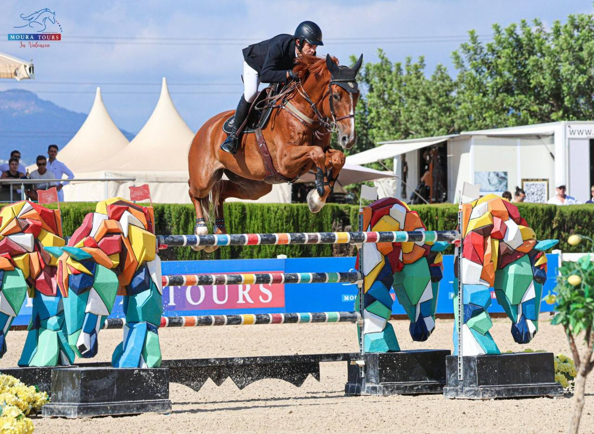

El Moura Tours Valencia estrena la prueba por equipos en su sexto CSN5* de la temporada
El recinto valenciano arranca este viernes un nuevo Concurso Nacional de cinco estrellas con 340 binomios inscritos y la novedad de la prueba por equipos, primera cita de una serie que culminará en diciembre.

El Moura Tours Valencia dará el pistoletazo de salida este viernes a un nuevo CSN5*, consolidándose como uno de los grandes referentes del calendario nacional. Se trata del sexto concurso nacional de máxima categoría organizado por el recinto valenciano en lo que va de temporada, con un total de 340 binomios inscritos que competirán en un intenso programa deportivo compuesto por 11 pruebas diarias para todos los niveles.
La gran novedad de esta edición es el estreno de la prueba por equipos de Moura Tours Valencia, primera cita de una serie que se extenderá durante los próximos meses y culminará con la gran final programada del 11 al 13 de diciembre. La competición incluirá también pruebas destinadas a caballos jóvenes de 5, 6 y 7 años, que servirán como preparación para la Final ANCADES prevista en estas mismas instalaciones en septiembre. La actividad comenzará el viernes en la Francisco Moura Arena con la prueba del CSNCJ para caballos de 5 años, mientras que en la Andiamo Arena arrancará con la prueba de 1,20 metros.
Entre los participantes destacan nombres como Alex Codina, Joel Vallés, Mariano Martínez Bastida, Paloma Barceló, Juan Ignacio Lasquetty, Rubén Gómez, Laura Roquet, Primitivo Nieves, Alberto Honrubia, Imma Roquet y Daniel Martínez Ricart, que medirán sus fuerzas en las distintas pruebas del programa.
— Redacción de Hípica al Día